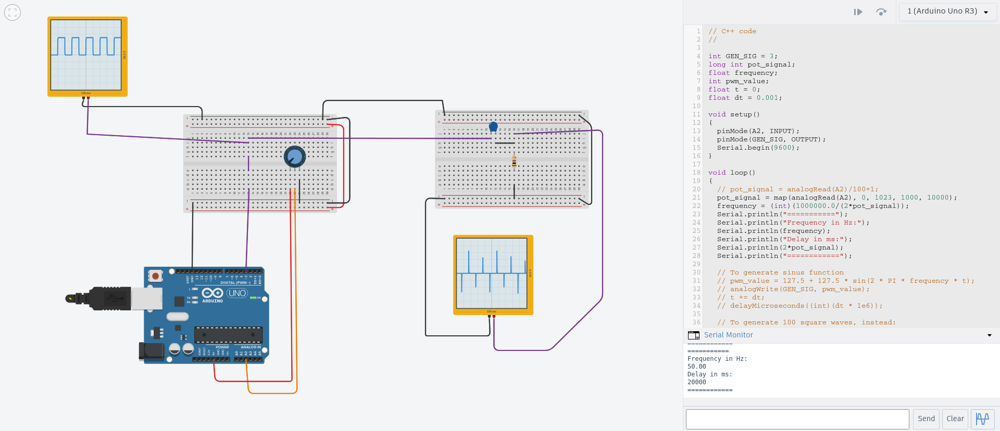
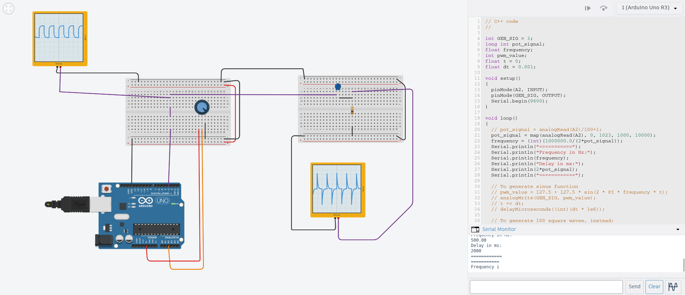

This project demonstrates digital square wave generation with an Arduino and its interaction with a simple RC high-pass filter. The frequency is controlled via a potentiometer.
A2GEN_SIGR = 100 Ω, C = 1 µF

// pot_signal = half-period of square wave in microseconds
frequency = 1000000.0 / (2 * pot_signal); // in Hz
analogRead averages out high-frequency signals.Open the circuit in Tinkercad: High_Pass_Filter
Shows embedded programming, analog/digital interactions, and basic signal processing. Ideal for educational or portfolio demonstration purposes.